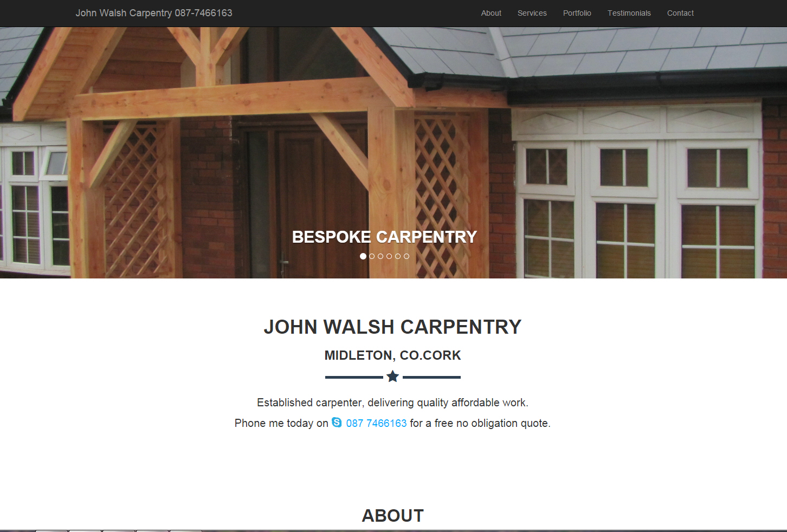

Portfolio
A handful of web sites and apps I've put together recently, showcasing front-end development
Midleton Mid-May Arts Festival
I designed & built this responsive, cross-browser, cross-platform site using Bootstrap, PHP, HTML5, CSS & a little JavaScript.
John Walsh Carpentry
I designed & built this cross-browser, cross-platform site using Bootstrap, HTML5, CSS & JavaScript.

mileagesheet.ie
I re-designed the front-end for this software product using Bootstrap, HTML5, CSS & Balsamiq.

Smart Data Analytics
I provided website maintenance and enhancements for a major tourist website while working for Smart Data Analytics.
Technologies / skills I used in this role included:
More examples to follow soon...
Contact Details
You can download my resume here.
Joe Walsh
10 Dunraven Downs,
Blackrock Road,
Cork
- 087 9349038
- josephrwalsh@hotmail.com
You can also find me on: